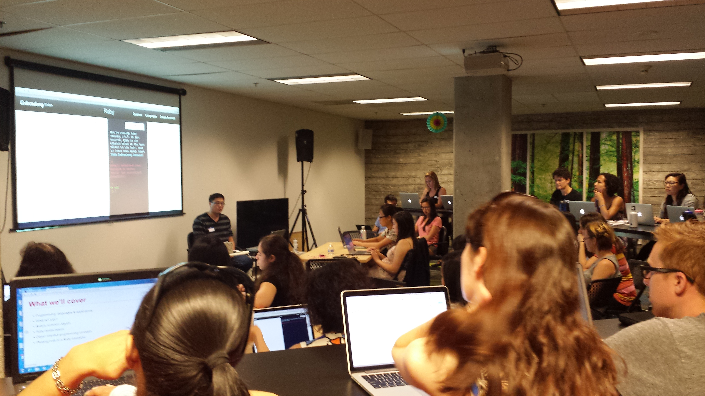
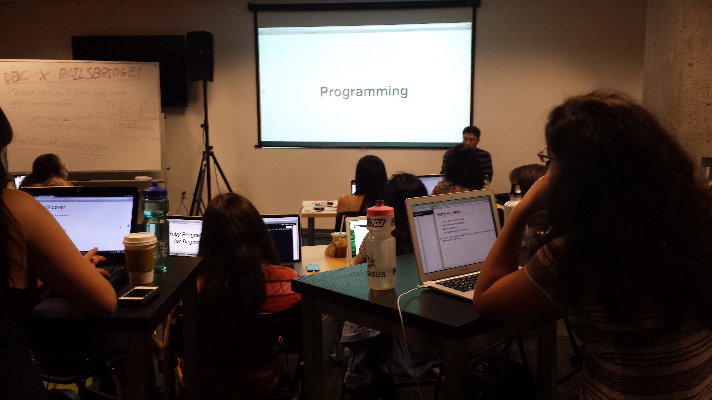
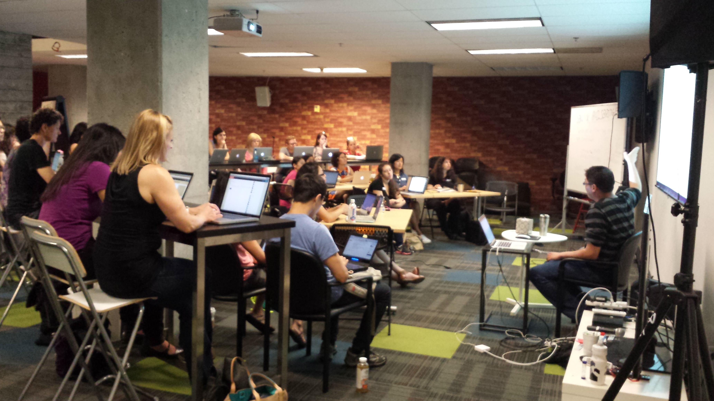
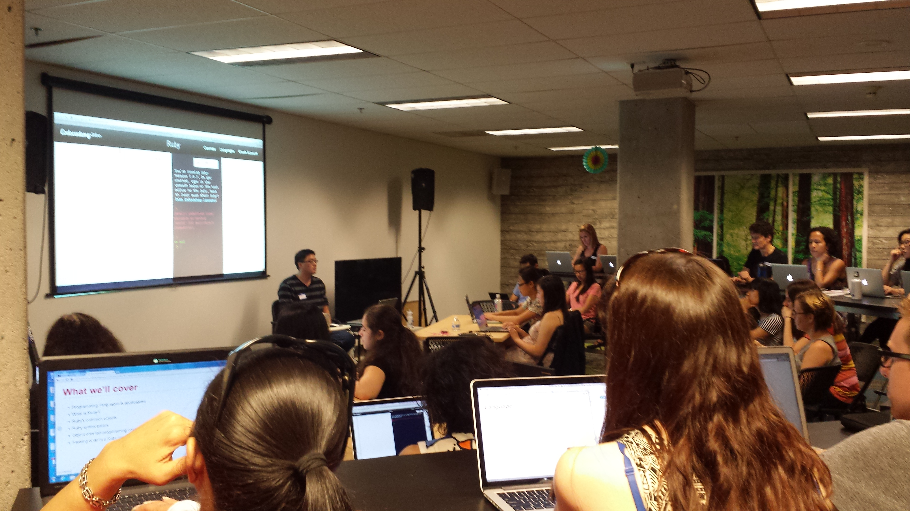

A Passion For Teaching.
There has always been this lingering feeling in my mind ever since I quit teaching in the public sector. It's like this uncontrollable itch. I know that it's there, but I can't seem to reach it. So when I first heard of RailsBridge, it was as if someone created an application that allowed me to get at that itch. This past weekend, I had the pleasure and opportunity to host and organize a DBC X RailsBridge event for teaching Ruby to Beginners. I originally was planning a very small, low key event at a cafe in San Leandro. But as I explained to my fellow cohort at DevBootCamp, momentum began to build up until we had a full blown event that DevBootCamp was willing to sponsor.(ShoutOut to Keren and all the people who work at DBC!) We had ~40 people who showed up for this event, with 16 volunteers and 24 students. Though there was some confusion and rough patches("Some students thought that this would be a more advanced course on Ruby"), many of the students were able to get something out of this event. Here is a snippet of someone who came to the event.

This is what keeps me going as an activist. That someone was able to benifit from my efforts. I will continue to hold meetings so long as I can, and so long as DevBootCamp and RailsBridge will allow me to. If there is another place somewhere in San Francisco that I could use as well for every sunday during the summer, I would appreciate it if you could send me an email. I'll end with a few pictures from the event. (Thank you Ori!)
   